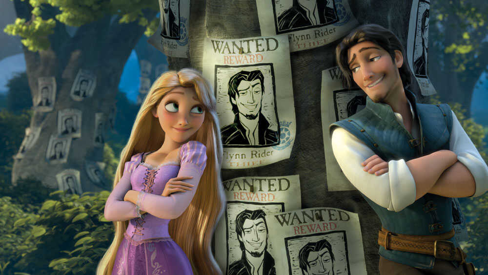

Rapunzel
There once lived a man and his wife, who had long wished for a child, but in vain. Now there was at the back of their house a little window which overlooked a beautiful garden full of the finest vegetables and flowers; but there was a high wall all round it, and no one ventured into it, for it belonged to a witch of great might, and of whom all the world was afraid.
One day that the wife was standing at the window, and looking into the garden, she saw a bed filled with the finest rampion; and it looked so fresh and green that she began to wish for some; and at length she longed for it greatly. This went on for days, and as she knew she could not get the rampion, she pined away, and grew pale and miserable. Then the man was uneasy, and asked, "What is the matter, dear wife?"
"Oh," answered she, "I shall die unless I can have some of that rampion to eat that grows in the garden at the back of our house. " The man, who loved her very much, thought to himself, "Rather than lose my wife I will get some rampion, cost what it will. " So in the twilight he climbed over the wall into the witch's garden, plucked hastily a handful of rampion and brought it to his wife. She made a salad of it at once, and ate of it to her heart's content. But she liked it so much, and it tasted so good, that the next day she longed for it thrice as much as she had done before; if she was to have any rest the man must climb over the wall once more. So he went in the twilight again; and as he was climbing back, he saw, all at once, the witch standing before him, and was terribly frightened, as she cried, with angry eyes, "How dare you climb over into my garden like a thief, and steal my rampion! it shall be the worse for you!"
"Oh," answered he, "be merciful rather than just, I have only done it through necessity; for my wife saw your rampion out of the window, and became possessed with so great a longing that she would have died if she could not have had some to eat." Then the witch said, "If it is all as you say you may have as much rampion as you like, on one condition - the child that will come into the world must be given to me. It shall go well with the child, and I will care for it like a mother."
In his distress of mind the man promised everything; and when the time came when the child was born the witch appeared, and, giving the child the name of Rapunzel (which is the same as rampion), she took it away with her.
Rapunzel was the most beautiful child in the world. When she was twelve years old the witch shut her up in a tower in the midst of a wood, and it had neither steps nor door, only a small window above. When the witch wished to be let in, she would stand below and would cry,
"Rapunzel, Rapunzel! Let down your hair!"
Rapunzel had beautiful long hair that shone like gold. When she. heard the voice of the witch she would undo the fastening of the upper window, unbind the plaits of her hair, and let it down twenty ells below, and the witch would climb up by it.
After they had lived thus a few years it happened that as the King's son was riding through the wood, he came to the tower; and as he drew near he heard a voice singing so sweetly that he stood still and listened. It was Rapunzel in her loneliness trying to pass away the time with sweet songs. The King's son wished to go in to her, and sought to find a door in the tower, but there was none. So he rode home, but the song had entered into his heart, and every day he went into the wood and listened to it. Once, as he was standing there under a tree, he saw the witch come up, and listened while she called out,
"O Rapunzel, Rapunzel! Let down your hair."
Then he saw how Rapunzel let down her long tresses, and how the witch climbed up by it and went in to her, and he said to himself, "Since that is the ladder I will climb it, and seek my fortune." And the next day, as soon as it began to grow dusk, he went to the tower and cried,
"O Rapunzel, Rapunzel! Let down your hair."
And she let down her hair, and the King's son climbed up by it. Rapunzel was greatly terrified when she saw that a man had come in to her, for she had never seen one before; but the King's son began speaking so kindly to her, and told how her singing had entered into his heart, so that he could have no peace until he had seen her herself. Then Rapunzel forgot her terror, and when he asked her to take him for her husband, and she saw that he was young and beautiful, she thought to herself, "I certainly like him much better than old mother Gothel, " and she put her hand into his hand.
She said: "I would willingly go with thee, but I do not know how I shall get out. When thou comest, bring each time a silken rope, and I will make a ladder, and when it is quite ready I will get down by it out of the tower, and thou shalt take me away on thy horse. " They agreed that he should come to her every evening, as the old woman came in the day-time.
So the witch knew nothing of all this until once Rapunzel said to her unwittingly, "Mother Gothel, how is it that you climb up here so slowly, and the King's son is with me in a moment?"
"O wicked child," cried the witch, "what is this I hear! I thought I had hidden thee from all the world, and thou hast betrayed me!" In her anger she seized Rapunzel by her beautiful hair, struck her several times with her left hand, and then grasping a pair of shears in her right - snip, snap - the beautiful locks lay on the ground. And she was so hard-hearted that she took Rapunzel and put her in a waste and desert place, where she lived in great woe and misery.
The same day on which she took Rapunzel away she went back to the tower in the evening and made fast the severed locks of hair to the window-hasp, and the King's son came and cried,
"Rapunzel, Rapunzel! Let down your hair."
Then she let the hair down, and the King's son climbed up, but instead of his dearest Rapunzel he found the witch looking at him with wicked glittering eyes.
"Aha!" cried she, mocking him, "you came for your darling, but the sweet bird sits no longer in the nest, and sings no more; the cat has got her, and will scratch out your eyes as well! Rapunzel is lost to you; you will see her no more." The King's son was beside himself with grief, and in his agony he sprang from the tower: he escaped with life, but the thorns on which he fell put out his eyes. Then he wandered blind through the wood, eating nothing but roots and berries, and doing nothing but lament and weep for the loss of his dearest wife.
So he wandered several years in misery until at last he came to the desert place where Rapunzel lived with her twin-children that she had borne, a boy and a girl. At first he heard a voice that he thought he knew, and when he reached the place from which it seemed to come Rapunzel knew him, and fell on his neck and wept. And when her tears touched his eyes they became clear again, and he could see with them as well as ever. Then he took her to his kingdom, where he was received with great joy, and there they lived long and happily.